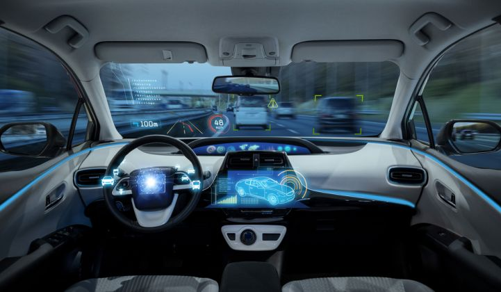

Product Design and Development
Topic: Product Design and Development
Date: February 24
Time: 10:30 AM - 12:30 PM
Venue: Chanakya Hall, NIT Calicut
Speaker: Dr. Arun Unnikrishnan
About the speaker
Dr. Arun Unnikrishnan was born in Kottayam District, Kerala, India. He completed B.Tech in Production Engineering from Government Engineering College Thrissur, Kerala, in 2008. He obtained M.Tech degree in Production Engineering from Indian Institute of Technology Delhi, New Delhi, in 2011. His M.Tech thesis was on “Lean Machine Tools Design”. He worked as an Assistant Professor in Department of Mechanical Engineering, Caarmel Engineering College, Perunad, Kerala, in 2012. He completed his Ph.D. from the Department of Mechanical Engineering, Indian Institute of Technology Delhi in the field of “Sustainable Manufacturing”, in 2018. His research interest includes Sustainable Manufacturing Practices, Computer Aided Manufacturing, Manufacturing Processes, Product Development, CNC machining, Machine tool design, etc.
Date: February 24
Time: 10:30 AM - 12:30 PM
Venue: Chanakya Hall, NIT Calicut
Speaker: Dr. Arun Unnikrishnan
About the speaker
For furthur queries,
CONTACT:
Vinay +91-9494775199
Bibin +91-9633834132

Autonomous Vehicle Technology
Topic: Autonomous Vehicle Technology
Session: Video Conferencing
Date: February 24
Time: 9:00 AM - 10:00 AM
Venue: Chanakya Hall, NIT Calicut
Speaker: Mr. Sujith Jose
About the speaker
Mr.Sujith Jose is deeply passionate about autonomous driving. He believes that fully autonomous driving could unclog our roads, make faster transportation easily accessible and most importantly, reduce blood spill on our roads. At Continental, he was part of the Advanced Driver Assistance Systems (ADAS) team developing cutting-edge products for Level 1 autonomy - Adaptive Cruise Control (ACC) and Emergency Brake Assist (EBA) - in automobiles. At Robert Bosch GmbH, he contributed as a Senior Software engineer in the area of RADAR simulation at ADAS team, helping to build ACC systems. As the world moves towards fully autonomous cars with the help of Deep Neural Networks and other Machine Learning techniques, He is excited to be a part of the revolution. Apart from his technical roles, he have taken lots of initiatives including the founding of Graduate Indian Student Association (GISA) and Solar Decathlon at UCLA and re-energizing Electronics and Communication Engineering Association (ECEA) at NIT Calicut to name a few. His leadership and technical contributions were acknowledged through different awards and scholarships including Engineering Achievement Award (UCLA), J. N Tata Scholarship, Narotam Sekhsaria Scholarship, K. C Mahindra Scholarship, Best Performer of the Year (Bosch), Best Outgoing Student (NIT Calicut) etc.
Session: Video Conferencing
Date: February 24
Time: 9:00 AM - 10:00 AM
Venue: Chanakya Hall, NIT Calicut
Speaker: Mr. Sujith Jose
About the speaker
For furthur queries,
CONTACT: Vinay +91-9494775199
CONTACT: Bibin +91-9633834132